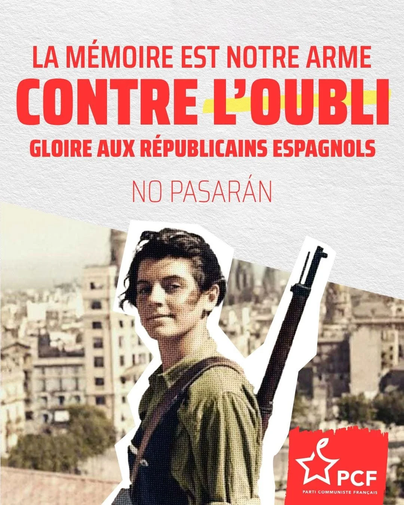

Publication relayée par le PCF 79
Le PCF rend hommage aux républicains espagnols, 86 ans après l’entrée de Franco à Madrid
Date de mise à jour indiquée par Facebook · 28 mars 2025
Texte de la publication · PCF national
28 mars 1939, Franco entre à Madrid : la réaction triomphe, mais la résistance antifasciste et communiste ne s’éteint pas
Honneur aux républicains tombés face au fascisme. Leur combat est le nôtre : ne laissons pas l’extrême droite s’imposer, plus que jamais !

Sources
PCF national · publication relayée par le PCF 79 · bibliothèque Facebook · AR-0002-FB-01156
À lire aussi · L'élan de la Libération de Paris · Le lien d’origine